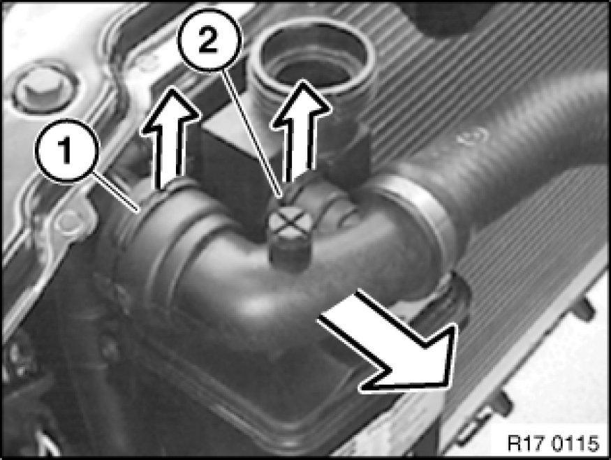

17 00 ... Instructions For Working on Cooling System
17 00 ... - Instructions for working on cooling system

Warning!
Danger of scalding! Work on the cooling system should only be carried out when the engine has cooled down.

Important!
Wear protective gloves and goggles.

Important!
Lifetime coolant filling:
Never reuse used coolant.
When replacing and removing components which rely on the corrosion protection effect of the coolant, it is essential to change the coolant. The cooling system must therefore be drained and refilled.
In the case of other removal work involving the draining of partial quantities of coolant, replace these quantities which have been drained with new coolant.
Important!
Open cooling system only when it has cooled down.
Opening the cooling system while hot can result in air entering the system.
This can cause overheating with permanent damage to the engine.
Important!
When working on the oil, coolant or fuel circuit, protect the alternator against contamination.
Cover alternator with suitable materials.
Failure to comply with this procedure may result in an alternator malfunction.
Important!
Do not fill coolant expansion tank over MAX level as overfilling will cause the coolant to overflow. This may give rise to traces of residual coolant on the expansion tank or in the engine compartment and wrongly suggest possible leakages.

Recycling
Catch and dispose of drained coolant.
Observe country-specific waste-disposal regulations.
Note:
Tightening torque, hose clamps 17 00 1AZ [1][2]17 00 Coolant System Components.
Instructions for disassembly/assembly of coolant hose fast-release couplings

Disassembly of fast-release coupling
Withdraw lock (1/2), disconnect hose.
Installation:
Check O-rings (1).
Do not coat O-rings (1) with antiseize agent.
Assembly of fast-release coupling
Press in lock (1) before installing fast-release coupling.
Push on hose.
Fast-release coupling must clearly snap audibly into place.